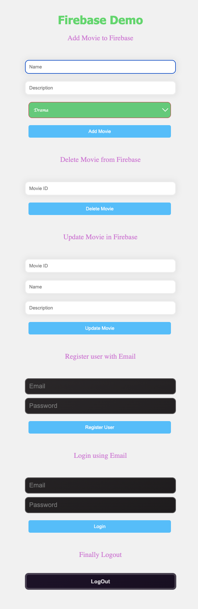

The instructions from this stackoverflow link
# install dependency
npm install dotenv --save
Once the package is installed, update the webpack.config.js:
const webpack = require('webpack'); // only add this if you don't have yet
// replace accordingly './.env' with the path of your .env file
require('dotenv').config({ path: './.env' });
and finally update the plugins section with below
plugins: [
new webpack.DefinePlugin({
"process.env": JSON.stringify(process.env)
})
],
After updating the package.json with the build command, run npm run build.
❯ npm run build
> unwiredjs@1.0.0 build
> webpack
asset bundle.js 1.43 MiB [emitted] (name: main)
runtime modules 891 bytes 4 modules
modules by path ./node_modules/ 1.27 MiB
modules by path ./node_modules/@firebase/ 1.24 MiB
modules by path ./node_modules/@firebase/auth/dist/esm2017/*.js 376 KiB 2 modules
+ 6 modules
modules by path ./node_modules/firebase/ 971 bytes
./node_modules/firebase/app/dist/index.esm.js 826 bytes [built] [code generated]
./node_modules/firebase/firestore/dist/index.esm.js 75 bytes [built] [code generated]
./node_modules/firebase/auth/dist/index.esm.js 70 bytes [built] [code generated]
modules by path ./node_modules/idb/build/*.js 10.4 KiB
./node_modules/idb/build/index.js 3.09 KiB [built] [code generated]
./node_modules/idb/build/wrap-idb-value.js 7.32 KiB [built] [code generated]
./node_modules/tslib/tslib.es6.mjs 15.9 KiB [built] [code generated]
./src/index.js 4.69 KiB [built] [code generated]
webpack 5.89.0 compiled successfully in 277 ms
asset bundle.js 1.43 MiB [emitted] (name: main)
cached modules 1.27 MiB [cached] 14 modules
runtime modules 891 bytes 4 modules
./src/index.js 4.52 KiB [built] [code generated]
webpack 5.89.0 compiled successfully in 30 ms
Start a local web server to access the html over browser. Here, I started a local python web server over port 5500.
❯ python3 -m http.server 5500
Now, the page with form fields can be accessed over http://localhost:5500/dist/index.html and it looks as shown below:
[]